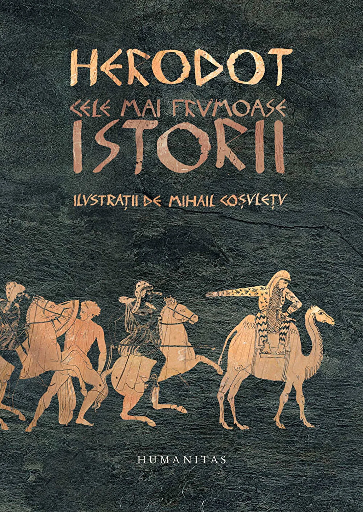

Cele mai frumoase Istorii
HERODOT
Istoriile lui Herodot sunt o intalnire cu originile culturii noastre, cu geneza unor concepte ca polis, politica sau democratie. Putem contempla destinul exemplar al unui popor mic care, desi dezbinat, va infrange cel mai puternic imperiu, dar care, devenit bogat si puternic, va cunoaste dezastrul unui razboi fratricid. Cititorul de azi va putea gusta exotismul Orientului, eternul mister al Egiptului si nemuritoarea poveste a razboaielor cu persii in paginile care evoca pentru intaia oara epopeea celor trei sute de hopliti de la Termopile, aroganta regelui Xerxes sau curajul lui Temistocle la Salamina.